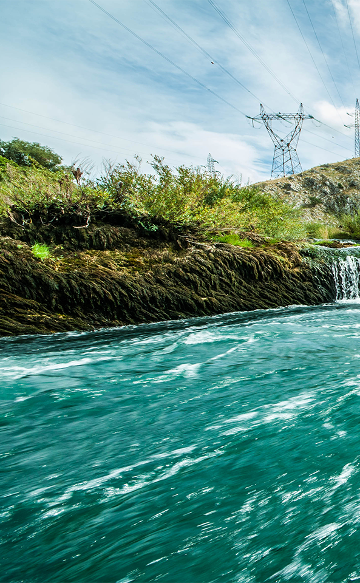
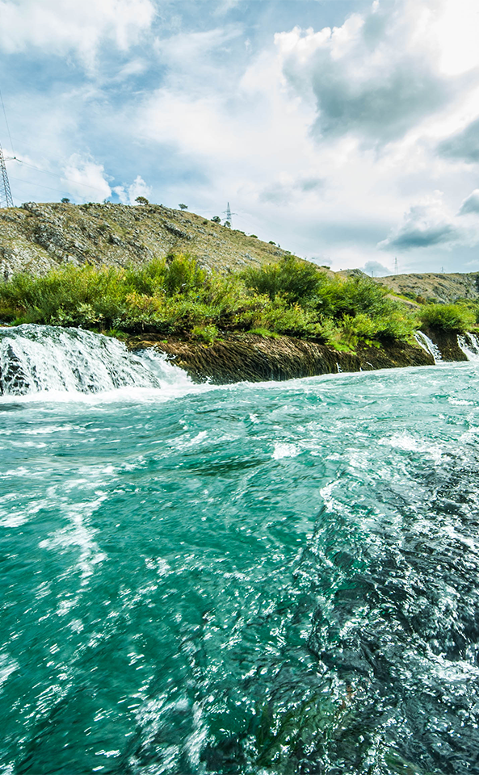
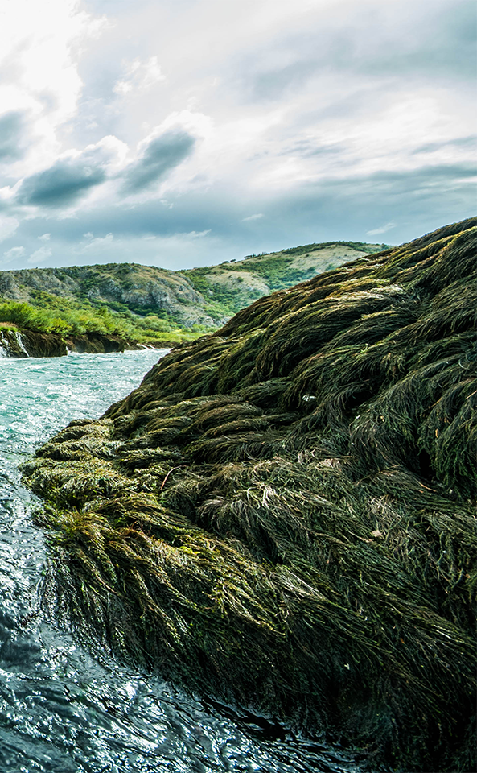

Green River
The Neretva (pronounced [něreːtʋa], also known as the Narenta, is the largest river of the eastern part of the Adriatic basin. It is recognized for its natural environment and diversity of its landscape. The Neretva is notable among rivers of the Dinaric Alps region,especially regarding its diverse ecosystems and habitats, flora and fauna, cultural and historic heritage. Its name has been suggested to come from the Indo-European root *ner, meaning "to dive".



Slide